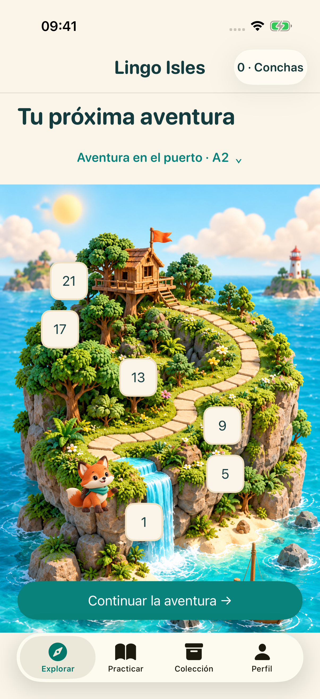
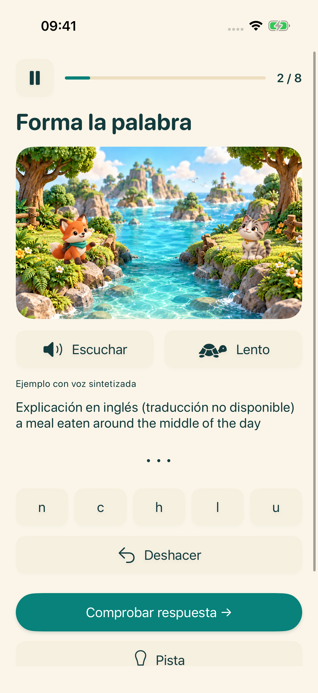
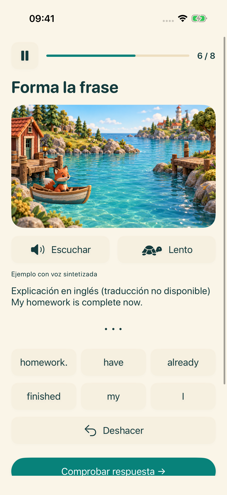
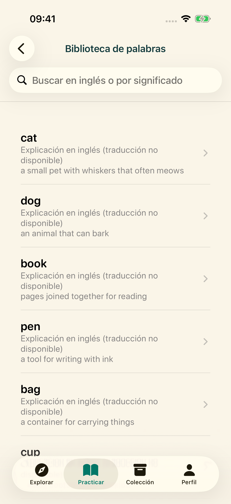

Tu próxima isla te espera
Elige tu etapa de aprendizaje y sigue un recorrido de ejercicios breves de inglés.
Explora cuatro islas de aprendizaje. Escucha, forma palabras, ordena frases y prueba tu voz: un pequeño descubrimiento a la vez.
Explora la aventuraPreparando el lanzamiento en iPhone y iPad


Elige tu etapa de aprendizaje y sigue un recorrido de ejercicios breves de inglés.

Escucha la voz del sistema y ordena letras para practicar la ortografía en inglés.

Ordena las palabras y descubre cómo se construyen las frases en inglés.

Explora el vocabulario, guarda favoritos y repasa lo aprendido.

Graba, escucha y vuelve a intentarlo. La transcripción opcional en el dispositivo está disponible en equipos compatibles. Es práctica, sin puntuación de pronunciación.
La interfaz admite 16 idiomas. Las explicaciones de aprendizaje están disponibles en inglés y chino simplificado; los demás idiomas muestran explicaciones en inglés claramente señaladas cuando no hay traducción.
El contenido de aprendizaje y el progreso se guardan en tu dispositivo. No se requiere cuenta ni sincronización en la nube gestionada por el desarrollador. Los recursos de voz dependen del dispositivo; los servicios de publicidad y privacidad necesitan conexión a Internet.
Los perfiles de menores de 18 años o sin grupo de edad no inician el proceso publicitario. Para los adultos, los anuncios dependen de las opciones de privacidad y la disponibilidad. Ver anuncios con recompensa es opcional.